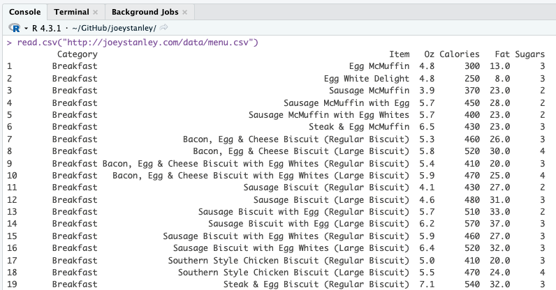
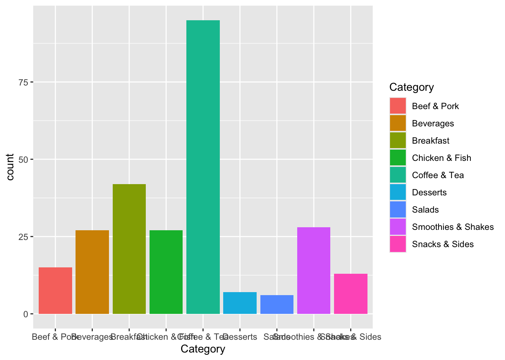
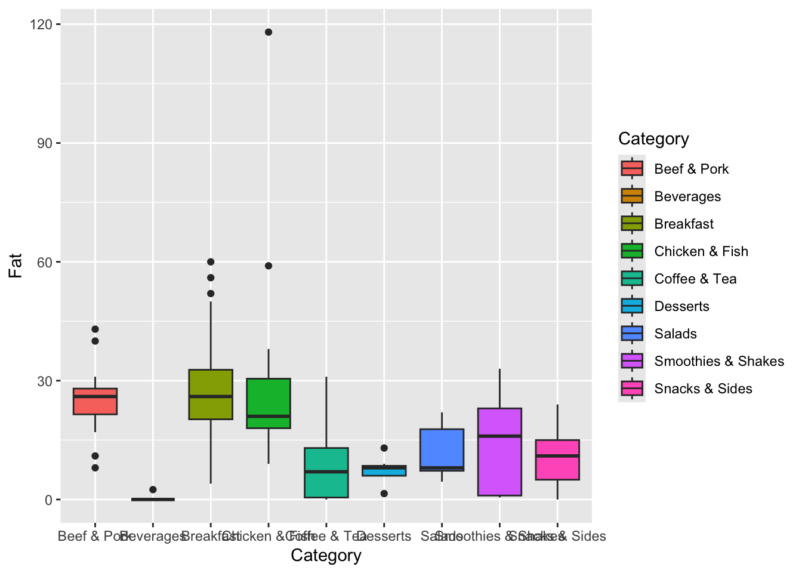
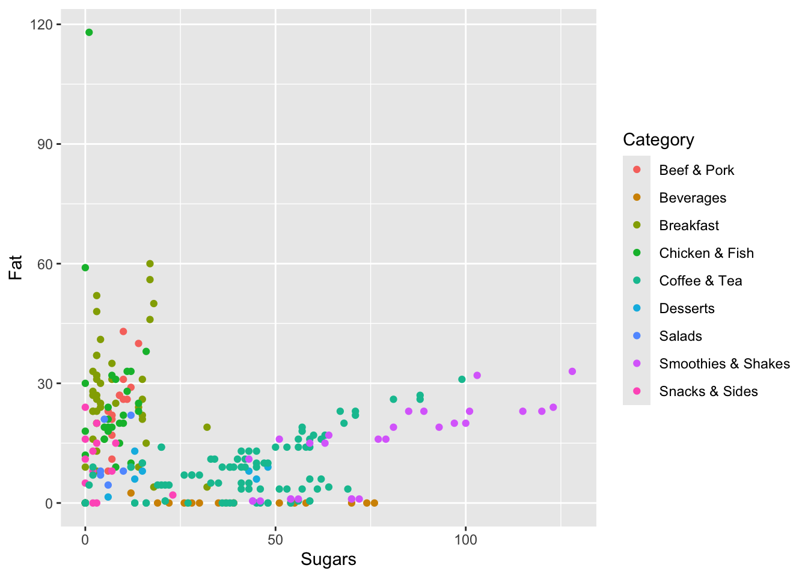
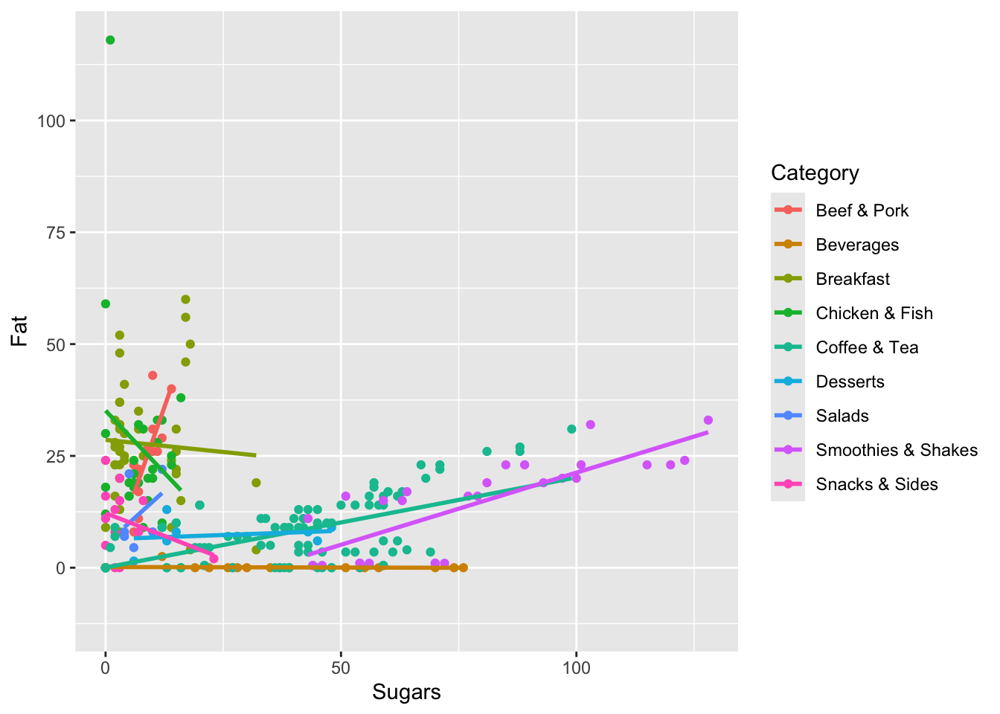

2+2R Basics
Note
This is Part 2 of a series on sociophonetic data analysis. Part 1 covered how to install R and R Studio.
Open RStudio and create a new script by going to File > New File > R Script. This will open what looks like a text editor in the top left portion of your RStudio screen. This looks like a text editor because that’s actually all it is. R scripts are just text files with nothing fancy about them. When you save them, instead of .txt they’ll get a .R appendix, which lets your computer know to run it as an R script.
R as a calculator
Obligatorily, any tutorial on R has to show you that R can be a calculator. In your R script, type the following:
With your cursor still on this line, hit command+enter (or for Windows, ctrl+enter), which is the keyboard shortcut for “execute this line”. In the bottom left quadrant of RStudio, you’ll now see a new line, in blue >2+2 and then, in black, the output [1] 4.
[1] 4You’ve just executed your first R command! You can think of the bottom left quadrant, the console, as the actual R portion of RStudio. The script above it is just a placeholder for the various commands. When you want to run a command, RStudio will send it down to the console and execute it. Once it does that, the next line in the console will be the output, which in this case is 4. The [1] before it just tells you that the output is actually a list that is one unit long. No need to worry about that right now.
You can do other arithmetic in R as well:
10*(5-2)/3+1[1] 11Not too shabby. But this is boring. Let’s move on to bigger and better things.
Variables
You can create variables to store data. Variables have arbitrary names, so you can call them whatever you want. To create a variable, provide it’s name (in this case six), then the assignment operator <-, and some value. (Mac users: a keyboard shortcut for the assignment operator is option+dash.) Let’s create a variable called six and give it the value of 6.
six <- 6Okay great. Now what we can do is use this six variable as if it were any other number.
six + 3[1] 9six * 2[1] 121 / six[1] 0.1666667Just to show the names really are arbitrary, you can use whatever names you want and it’ll still work.
blue <- 4
six + blue[1] 10seven <- 8
dog <- -5
blue * seven + dog[1] 27It’s probably not a good idea to use these kinds of variable names—and in general it’s good practice to give brief but descriptive variable names—but it goes to show you can use whatever names you want.
You can store multiple numbers in a single variable using the c() command, which stands for “combine”. Let’s create a new variable called fibs and have it contain the first several numbers of the Fibonacci sequence.
fibs <- c(0, 1, 1, 2, 3, 5, 8, 13, 21, 34, 55, 89, 144)Technically this list of numbers is called a vector in R, specially, a double vector. This doesn’t mean that there’s anything repeated or doubled: “double” is a term used in computer science to essentially mean number. What we have is a vector of numbers. What’s cool about these is that you can treat it like a single number, and it’ll run the command on each element of the vector.
2 + fibs [1] 2 3 3 4 5 7 10 15 23 36 57 91 146six * fibs [1] 0 6 6 12 18 30 48 78 126 204 330 534 864You can display the entire contents of the vector by simply typing the name of the variable.
fibs [1] 0 1 1 2 3 5 8 13 21 34 55 89 144But if you want to access a single item in that list, type the variable name and in square brackets immediately after the variable name, type what the which element you’d like to access. For example, here’s how you would access the first, fifth, and tenth elements of the list
fibs[1][1] 0fibs[5][1] 3fibs[10][1] 34You can even pass in a list of numbers! If you want to see all three of these elements of the list at once, just wrap them up in the c function and put that in place of the number.
fibs[c(1,5,10)][1] 0 3 34These lists are really important, because when it comes time to read in your own spreadsheets into R, each column will be treated as a list just like this one. We’ll get to that in a sec.
Arithmatic Functions
This is great and all. We can do more though. Here, let’s look at what are called functions. These are commands that take one or more arguments. The function takes these arguments, works its magic under the hood, and returns some value. For example, the sqrt function takes the square root of some number.
sqrt(16)[1] 4Note that the functions are case sensitive, and the arguments go in parentheses. If there are multiple arguments, they are separated by commas. Some other functions include sum, mean, and range. You can pass variables as arguments, and you can even nest functions.
sum(six, 3, dog)[1] 4mean(fibs)[1] 28.92308range(fibs, -4, sqrt(16), six)[1] -4 144You should get very comfortable running functions and getting all the syntax right like keeping track of your parentheses, commas, capitalization (a big one for new coders!), and spelling. The idea that you run functions, and on functions within functions, is super common in R. You don’t have to memorize all the functions that R has, and in fact, you’ll probably never use them. You’re probably wondering what all the functions in R even are and how you’re supposed to know about them. Google. There is tons of documentation for R online, and you’ll hopefully be able to find your answer very quickly.
Sequences of numbers
What if you wanted to create a sequence of numbers from 1 to 5 and store that in a variable? No problem. Not too much work.
first_five <- c(1, 2, 3, 4, 5)If you wanted to go to 10, no big deal. What if you wanted to go to 100? That’s a lot of typing. Not only that, but it’s prone to error. For this reason, you can just use a colon (:) to do a sequence of integers. You can start and end with whatever numbers you want.
1:5[1] 1 2 3 4 513:28 [1] 13 14 15 16 17 18 19 20 21 22 23 24 25 26 27 281:100 [1] 1 2 3 4 5 6 7 8 9 10 11 12 13 14 15 16 17 18
[19] 19 20 21 22 23 24 25 26 27 28 29 30 31 32 33 34 35 36
[37] 37 38 39 40 41 42 43 44 45 46 47 48 49 50 51 52 53 54
[55] 55 56 57 58 59 60 61 62 63 64 65 66 67 68 69 70 71 72
[73] 73 74 75 76 77 78 79 80 81 82 83 84 85 86 87 88 89 90
[91] 91 92 93 94 95 96 97 98 99 100You can also use the seq function to create sequences beyond consecutive integers. This function, like many others, takes several arguments, some of which are optional. Each argument has a name too, so we can use that name to specify what numbers we’re writing belong to which argument.
seq(from=1, to=20, by=2) [1] 1 3 5 7 9 11 13 15 17 19This command creates a sequence of numbers, starting with 1 and going until 20, incrementing by 2. You can set these numbers to whatever you want and save the whole thing into a variable.
fifths <- seq(from=-1, to=1, by=0.2)
fifths + blue [1] 3.0 3.2 3.4 3.6 3.8 4.0 4.2 4.4 4.6 4.8 5.0Another handy function to be aware of is rep. This repeats a sequence some number of times. The times argument makes it so the entire sequence is repeated as a block that many times. The each argument repeats each inividual element within the sequence that number of times. And of course, you can put both arguments there if you want.
rep(1:5, times=2) [1] 1 2 3 4 5 1 2 3 4 5rep(1:5, each=3) [1] 1 1 1 2 2 2 3 3 3 4 4 4 5 5 5rep(1:5, times=2, each=3) [1] 1 1 1 2 2 2 3 3 3 4 4 4 5 5 5 1 1 1 2 2 2 3 3 3 4 4 4 5 5 5TRUE and FALSE
With these numbers, you can test whether they fit certain specifications. These operators are like what you’d see in math class:
>means “greater than”<means “less than”`>=’ means “greater than or equal to”
<=means “less than or equal to”==means “equal to”. Note here that you need two equals signs, and not just one.!=means “not equal to”
In its simplest sense, we can use operators to compare just two numbers. When you run the command, it will return one of two values, TRUE or FALSE.
5 < 10[1] TRUEThis isn’t super useful right now, but it can be if you evaluate a whole list at once.
first_five == 3[1] FALSE FALSE TRUE FALSE FALSEHere we get the same number of TRUE/FALSE statements as the vector we evaluated. Basically, we asked it which of the elements is equal to 3. These two values, TRUE and FALSE are special cases. They’re always in capitals and they’re in blue when you type them in RStudio. A vector of these values is called a logical vector.
For what it’s worth, you can wrap that whole thing into the which function and get which nth elements in the original vector satisfy the evaluation. So, with first_five == 3, I get two FALSEs, a TRUE, and two FALSEs. With which(first_five == 3), the result is3`, meaning the third element in that vector is the one that is equal to three.
which(first_five == 3)[1] 3To see that again, I can see which elements of the Fibonacci sequence are less than 10.
which(fibs < 10)[1] 1 2 3 4 5 6 7Here, I see that the 1st through 7th elements of that list are the ones that are less than 10. It’s a little confusing because we’re sending in numbers and getting numbers back, except the numbers we get back refer to the nth elements instead of the actual numbers in the Fibonacci sequence. So you’ll just have to remember that that’s how which works.
The operators are also useful for checking things.
sum(fibs) > 200[1] TRUEseven == 7[1] FALSEmean(fifths) != 0[1] TRUELater, we’ll see what to do with this information.
Getting data into R
At this point, a lot of R tutorials start you off with working with generating data within R itself. While this is an important skill to learn eventually, what’s most relevant to you right now is getting your own data into R.
I’m going to assume you have your own spreadsheet somewhere saved on your computer. Ideally, each row represents one observation and each column is a variable of that observation. For example, if you had a spreadsheet that had the area, population, and capital of each of the 50 states, you’ll have 50 rows and 4 columns (one for each of the variables and the fourth for the state name). Presumably, your data is clean and tidy, meaning that dates and numbers are formatted the same, capitalization is standardized, and everything is consistent. I could go on for a long time about the importance of making your data clean, but suffice it to say that it’s paramount for proper analysis in R. For now, you can go to this tutorial on what is meant by clean and tidy data.
The functions for reading in data in R depend on what kind of file you have. The most common options are .csv, .txt, and an Excel file. Let’s look at each one of those.
.csv files
If your file has comma-separated values (it ends with .csv), that’s the easiest way to go. You can use read.csv, and as the only argument, put the full path to the file you want to read in, in quotation marks. For example, I’ve got a file on my Desktop called menu.csv. This file contains all the menu items at McDonald’s with complete nutrition information and is available for free at Kaggle.com. To read this file in, the function would be this:
read.csv("/Users/joeystanley/Desktop/menu.csv")If I were on a Windows, it might be something like this:
read.csv("C:\\Users\\joeystanley\\Desktop\\menu.txt")Note that Mac users should use single forward slashes while Windows users have to use double back slashes.
To execute this command, I would put my cursor anywhere on the line, and either click the Run button on the top left of the R script, or preferably, use the keyboard shortcut command+return for Macs or control+enter for Windows.
When you do this, you’ll start to see the contents of your file displayed in your R console (the bottom left portion of the RStudio screen).

Hooray! You just read your data into R!
Unfortunately, all it did was read it in and forget it. Computers do exactly as they’re told. What you didn’t tell R was to remember the contents of the file. So, let’s create a new variable called menu and save the contents of the menu.csv file into that variable.
menu <- read.csv("/Users/joeystanley/Desktop/menu.csv") # for Macs
menu <- read.csv("C:\\Users\\joeystanley\\Desktop\\menu.txt") # for WindowsOkay, so now we have a new menu object that has the full contents of my file. Before we move on to working with that file, let’s see how to read in files that are in other formats.
Your Turn!
If you already have a dataset that contains some vowel formant data, try reading that in now! You should follow along this tutorial with the example data, but then you should try it again on your own data as additional practice.
.txt files
If your file is a tab-delimited file (it ends with .txt), then you can use read.table instead. As an additional argument (which is separated from the path name with a comma), you may need to specify that the cells of your table are separated by tabs. To do this, add the sep="\t" argument (\t is “computer-talk” for a tab). Also, your file may have a header, meaning the first row of your file might contain the names of the columns. By default, read.csv assumes this, but for read.table you’ll need to make that explicit so R knows what to do with them. You can add this using the header=TRUE argument. So the final command might look like this.
menu <- read.table("/Users/joeystanley/Desktop/menu.csv", sep="\t", header=TRUE) # for Macs
menu <- read.table("C:\\Users\\joeystanley\\Desktop\\menu.txt", sep="\t", header=TRUE) # for WindowsExcel files
If you data is in an Excel file, there are ways to get it into R. For now, the easiest solution is to simply save it as a .csv file and read it in that way. In a later tutorial, when we talk about the tidyverse, we’ll look at how to read in data from Excel.
Don’t like typing path names?
There is one other way to read in data that doesn’t involve typing those long path names. You can use the file.choose command instead. When you do this, a window will open up and you’ll be able to find your file and click on it just like you were opening any other file.
menu <- file.choose()I don’t like this option mostly because it just takes too many clicks. Every time I want to run this line of code, it takes 5 or so clicks to get the file I want. This gets really tedious. It’s worth the time to just type (or copy and paste!) the path name to the file one time, and with a single keystroke you can load it in nearly instantaneously the exact same way every time.
Working with your data
Okay, so your data is in R. Now we need to be able to view it to make sure it’s all there, and also be able to extract portions of it.
Displaying your data
The easiest way to display your data is to simply type the name of the variable itself. However, depending on the size of your data frame, this could get huge. I’ve truncated mine, particularly the description so it would fit on this page, but yours might be different.
menu Category Item Oz Calories Fat Sugars
1 Breakfast Egg McMuffin 4.8 300 13 3
2 Breakfast Egg White Delight 4.8 250 8 3
3 Breakfast Sausage McMuffin 3.9 370 23 2
4 Breakfast Sausage McMuffin with Eg 5.7 450 28 2
5 Breakfast Sausage McMuffin with Eg 5.7 400 23 2
6 Breakfast Steak & Egg McMuffin 6.5 430 23 3
7 Breakfast Bacon, Egg & Cheese Bisc 5.3 460 26 3
8 Breakfast Bacon, Egg & Cheese Bisc 5.8 520 30 4
9 Breakfast Bacon, Egg & Cheese Bisc 5.4 410 20 3
10 Breakfast Bacon, Egg & Cheese Bisc 5.9 470 25 4
11 Breakfast Sausage Biscuit (Regular 4.1 430 27 2
12 Breakfast Sausage Biscuit (Large B 4.6 480 31 3
13 Breakfast Sausage Biscuit with Egg 5.7 510 33 2
14 Breakfast Sausage Biscuit with Egg 6.2 570 37 3
15 Breakfast Sausage Biscuit with Egg 5.9 460 27 3
16 Breakfast Sausage Biscuit with Egg 6.4 520 32 3
17 Breakfast Southern Style Chicken B 5.0 410 20 3
18 Breakfast Southern Style Chicken B 5.5 470 24 4
19 Breakfast Steak & Egg Biscuit (Reg 7.1 540 32 3
20 Breakfast Bacon, Egg & Cheese McGr 6.1 460 21 15This may spill over onto multiple lines. That’s only because my screen isn’t wide enough to display the full row. An alternative that is easier for scrolling, is to use the View function (yes, that’s a capital V). This opens up a new tab in RStudio, and you’ll be able to view your data like you would a normal spreadsheet.
View(menu) # Not run here because we're not in RStudio.You can also just display portions of your data using head and tail, which, respectively, show the first and last couple of rows.
head(menu) Category Item Oz Calories Fat Sugars
1 Breakfast Egg McMuffin 4.8 300 13 3
2 Breakfast Egg White Delight 4.8 250 8 3
3 Breakfast Sausage McMuffin 3.9 370 23 2
4 Breakfast Sausage McMuffin with Eg 5.7 450 28 2
5 Breakfast Sausage McMuffin with Eg 5.7 400 23 2
6 Breakfast Steak & Egg McMuffin 6.5 430 23 3tail(menu) Category Item Oz Calories Fat Sugars
255 Smoothies & Shakes McFlurry with M&M\x89۪s Can 7.3 430 15 59
256 Smoothies & Shakes McFlurry with Oreo Cooki 10.1 510 17 64
257 Smoothies & Shakes McFlurry with Oreo Cooki 13.4 690 23 85
258 Smoothies & Shakes McFlurry with Oreo Cooki 6.7 340 11 43
259 Smoothies & Shakes McFlurry with Reese's Pe 14.2 810 32 103
260 Smoothies & Shakes McFlurry with Reese's Pe 7.1 410 16 51Extracting portions of your data
Before, when we had several numbers saved into a single variable, we called it a vector. Now, we have an entire spreadsheet saved into the menu variable. Each column in your data frame is treated as a vector, and each row of that column is an element in that list. We call this type of variable a dataframe.
You can think of a vector as a one-dimensional variable and a data frame as a two-dimensional variable. To access an element of a vector, you type one number in the square brackets (fibs[1]). Because a data frame is two-dimensional, you’ll have to send two numbers, separated by a comma: the first for the row number and the second for the column number.
menu[4,2][1] "Sausage McMuffin with Eg"The line [1] Sausage McMuffin with Eg shows the content of the element you just extracted.
So that’s how you would extract a single cell in your spreadsheet. You can extract an entire row by leaving off the column number.
menu[3,] Category Item Oz Calories Fat Sugars
3 Breakfast Sausage McMuffin 3.9 370 23 2Notice how the output shows the column names along the top as well as the row number on the left side. You can extract an entire column by leaving off the row number. (I’ve truncated my list for display purposes: yours will be a lot longer.)
menu[,2] [1] "Egg McMuffin" "Egg White Delight"
[3] "Sausage McMuffin" "Sausage McMuffin with Eg"
[5] "Sausage McMuffin with Eg" "Steak & Egg McMuffin"
[7] "Bacon, Egg & Cheese Bisc" "Bacon, Egg & Cheese Bisc"
[9] "Bacon, Egg & Cheese Bisc" "Bacon, Egg & Cheese Bisc"As an alternative to extracting an entire column, it’s easier to refer to the column by its name (Item) rather than its number (2). This is especially true if you have many columns in your spreadsheet and you don’t feel like counting all of them. You can refer tho the column using the dollar sign $, which is placed between the variable name and the column name.
menu$Item [1] "Egg McMuffin" "Egg White Delight"
[3] "Sausage McMuffin" "Sausage McMuffin with Eg"
[5] "Sausage McMuffin with Eg" "Steak & Egg McMuffin"
[7] "Bacon, Egg & Cheese Bisc" "Bacon, Egg & Cheese Bisc"
[9] "Bacon, Egg & Cheese Bisc" "Bacon, Egg & Cheese Bisc"Filtering your data
We can also perform queries on your data so that we can filter your data in whatever way we want. We can view entire portions of the data frame just as easily in Excel as we can in R, so why bother with R in the first place?
In Excel it’s certainly possible to filter your data. But it gets a little cumbersome if you have multiple filters on at once. Or if you have to switch back and forth between two or more different filters, you have to do a lot of clicking. With R, it’s a little bit easier. To use filters, we’ll have to use those operators that we looked at earlier. Remember how we can evaluate a whole vector of numbers and see which ones meet certain conditions? For example, we can see which numbers in our Fibonacci sequence is less than ten.
fibs < 10 [1] TRUE TRUE TRUE TRUE TRUE TRUE TRUE FALSE FALSE FALSE FALSE FALSE
[13] FALSEWe can use the same kind of thing to subset your data. Since each column of your data is a vector, we can use the same syntax, only instead of fibs, we’ll call the name of the column we’re interested in. Here I can see rows contain menu items have 150 calories or less.
menu$Calories <= 150 [1] FALSE FALSE FALSE FALSE FALSE FALSE FALSE FALSE FALSE FALSE FALSE FALSE
[13] FALSE FALSE FALSE FALSE FALSE FALSE FALSE FALSE FALSE FALSE FALSE FALSE
[25] FALSE FALSE FALSE FALSE FALSE FALSE FALSE FALSE FALSE FALSE FALSE FALSE
[37] FALSE FALSE TRUE FALSE FALSE FALSE FALSE FALSE FALSE FALSE FALSE FALSE
[49] FALSE FALSE FALSE FALSE FALSE FALSE FALSE FALSE FALSE FALSE FALSE FALSE
[61] FALSE FALSE FALSE FALSE FALSE FALSE FALSE FALSE FALSE FALSE FALSE FALSE
[73] FALSE FALSE FALSE FALSE FALSE FALSE FALSE FALSE FALSE FALSE FALSE FALSE
[85] TRUE FALSE FALSE TRUE FALSE FALSE FALSE FALSE FALSE FALSE FALSE FALSE
[97] FALSE FALSE FALSE TRUE TRUE TRUE TRUE FALSE FALSE TRUE TRUE FALSE
[109] FALSE FALSE TRUE FALSE FALSE TRUE TRUE TRUE TRUE TRUE TRUE FALSE
[121] FALSE TRUE TRUE TRUE TRUE TRUE TRUE FALSE FALSE TRUE TRUE TRUE
[133] TRUE TRUE FALSE FALSE TRUE TRUE TRUE TRUE TRUE TRUE FALSE FALSE
[145] TRUE TRUE TRUE TRUE FALSE FALSE FALSE FALSE FALSE FALSE FALSE FALSE
[157] FALSE FALSE FALSE FALSE FALSE FALSE FALSE TRUE TRUE FALSE FALSE FALSE
[169] FALSE FALSE FALSE FALSE FALSE FALSE FALSE TRUE FALSE FALSE FALSE FALSE
[181] FALSE FALSE FALSE FALSE FALSE FALSE FALSE FALSE FALSE FALSE FALSE FALSE
[193] FALSE FALSE FALSE FALSE TRUE FALSE FALSE TRUE FALSE FALSE TRUE FALSE
[205] FALSE TRUE FALSE FALSE TRUE TRUE FALSE FALSE FALSE FALSE FALSE FALSE
[217] FALSE FALSE FALSE FALSE FALSE FALSE FALSE FALSE FALSE FALSE FALSE FALSE
[229] FALSE FALSE FALSE FALSE FALSE FALSE FALSE FALSE FALSE FALSE FALSE FALSE
[241] FALSE FALSE FALSE FALSE FALSE FALSE FALSE FALSE FALSE FALSE FALSE FALSE
[253] FALSE FALSE FALSE FALSE FALSE FALSE FALSE FALSERight now, all those TRUEs and FALSE are not particularly helpful for the you, but they are helpful for R. We can embed that into a bit of code we’ve already seen to do a the filter. The way I do that is by using the same syntax we used above to get just one row, only instead of a single number, we’ll put that entire vector of TRUEs and FALSEs.
# Here's just one row
menu[4,] Category Item Oz Calories Fat Sugars
4 Breakfast Sausage McMuffin with Eg 5.7 450 28 2# Now, swap out the 4 for the evaluation statement: menu$Calories <= 150
menu[menu$Calories <= 150,] Category Item Oz Calories Fat Sugars
39 Breakfast Hash Brown 2.0 150 9.0 0
85 Salads Premium Bacon Ranch Sala 7.9 140 7.0 4
88 Salads Premium Southwest Salad 8.1 140 4.5 6
100 Snacks & Sides Kids French Fries 1.3 110 5.0 0
101 Snacks & Sides Side Salad 3.1 20 0.0 2
102 Snacks & Sides Apple Slices 1.2 15 0.0 3
103 Snacks & Sides Fruit 'n Yogurt Parfait 5.2 150 2.0 23
106 Desserts Oatmeal Raisin Cookie 1.0 150 6.0 13
107 Desserts Kids Ice Cream Cone 1.0 45 1.5 6
111 Beverages Coca-Cola Classic (Small 16.0 140 0.0 39
114 Beverages Coca-Cola Classic (Child 12.0 100 0.0 28
115 Beverages Diet Coke (Small) 16.0 0 0.0 0
116 Beverages Diet Coke (Medium) 21.0 0 0.0 0
117 Beverages Diet Coke (Large) 30.0 0 0.0 0
118 Beverages Diet Coke (Child) 12.0 0 0.0 0
119 Beverages Dr Pepper (Small) 16.0 140 0.0 35
122 Beverages Dr Pepper (Child) 12.0 100 0.0 26
123 Beverages Diet Dr Pepper (Small) 16.0 0 0.0 0
124 Beverages Diet Dr Pepper (Medium) 21.0 0 0.0 0
125 Beverages Diet Dr Pepper (Large) 30.0 0 0.0 0
126 Beverages Diet Dr Pepper (Child) 12.0 0 0.0 0
127 Beverages Sprite (Small) 16.0 140 0.0 37
130 Beverages Sprite (Child) 12.0 100 0.0 27
131 Beverages 1% Low Fat Milk Jug 1.0 100 2.5 12
132 Beverages Fat Free Chocolate Milk 1.0 130 0.0 22
133 Beverages Minute Maid 100% Apple J 6.0 80 0.0 19
134 Beverages Minute Maid Orange Juice 12.0 150 0.0 30
137 Beverages Dasani Water Bottle 16.9 0 0.0 0
138 Coffee & Tea Iced Tea (Small) 16.0 0 0.0 0
139 Coffee & Tea Iced Tea (Medium) 21.0 0 0.0 0
140 Coffee & Tea Iced Tea (Large) 30.0 0 0.0 0
141 Coffee & Tea Iced Tea (Child) 12.0 0 0.0 0
142 Coffee & Tea Sweet Tea (Small) 16.0 150 0.0 36
145 Coffee & Tea Sweet Tea (Child) 12.0 110 0.0 27
146 Coffee & Tea Coffee (Small) 12.0 0 0.0 0
147 Coffee & Tea Coffee (Medium) 16.0 0 0.0 0
148 Coffee & Tea Coffee (Large) 16.0 0 0.0 0
164 Coffee & Tea Nonfat Latte (Small) 12.0 100 0.0 13
165 Coffee & Tea Nonfat Latte (Medium) 16.0 130 0.0 16
176 Coffee & Tea Nonfat Latte with Sugar 12.0 140 0.0 13
197 Coffee & Tea Regular Iced Coffee (Sma 16.0 140 4.5 22
200 Coffee & Tea Caramel Iced Coffee (Sma 16.0 130 4.5 21
203 Coffee & Tea Hazelnut Iced Coffee (Sm 16.0 130 4.5 20
206 Coffee & Tea French Vanilla Iced Coff 16.0 120 4.5 19
209 Coffee & Tea Iced Coffee with Sugar F 16.0 80 4.5 1
210 Coffee & Tea Iced Coffee with Sugar F 22.0 120 7.0 2Let’s break this down. First, we have the menu[] template like we’ve been doing before to display portions of the menu variable. Next, if you look carefully, we have some stuff, followed by a comma, and then nothing: menu[...,]. This is exactly like what we did before where we extracted an entire row and displayed all columns. Only this time, instead of a row number, we’re giving a true/false statement. We’re referring to just the Calories column in the data frame, like we did before. Since each column in a data frame is a vector, we can treat it like we did with fibs above and find which of the elements meet the qualification. So, we’re finding all rows such that the Calories column of that row is less than or equal to 150. It may seem confusing at first that you have to type the name of the dataset twice: menu[menu$...,], but that’s just how it is. When we get to tidyverse, we’ll see a different syntax that you might like better.
That’s still a decent number of menu items, but if you look closely, they’re mostly diet versions of sodas. We can apply another filter to the data and remove anything where the Category is "Beverages". To do that, all we need to do is put an ampersand & after the filter but before the comma, and just type another filter.
menu[menu$Calories <= 150 & menu$Category != "Beverages",] Category Item Oz Calories Fat Sugars
39 Breakfast Hash Brown 2.0 150 9.0 0
85 Salads Premium Bacon Ranch Sala 7.9 140 7.0 4
88 Salads Premium Southwest Salad 8.1 140 4.5 6
100 Snacks & Sides Kids French Fries 1.3 110 5.0 0
101 Snacks & Sides Side Salad 3.1 20 0.0 2
102 Snacks & Sides Apple Slices 1.2 15 0.0 3
103 Snacks & Sides Fruit 'n Yogurt Parfait 5.2 150 2.0 23
106 Desserts Oatmeal Raisin Cookie 1.0 150 6.0 13
107 Desserts Kids Ice Cream Cone 1.0 45 1.5 6
138 Coffee & Tea Iced Tea (Small) 16.0 0 0.0 0
139 Coffee & Tea Iced Tea (Medium) 21.0 0 0.0 0
140 Coffee & Tea Iced Tea (Large) 30.0 0 0.0 0
141 Coffee & Tea Iced Tea (Child) 12.0 0 0.0 0
142 Coffee & Tea Sweet Tea (Small) 16.0 150 0.0 36
145 Coffee & Tea Sweet Tea (Child) 12.0 110 0.0 27
146 Coffee & Tea Coffee (Small) 12.0 0 0.0 0
147 Coffee & Tea Coffee (Medium) 16.0 0 0.0 0
148 Coffee & Tea Coffee (Large) 16.0 0 0.0 0
164 Coffee & Tea Nonfat Latte (Small) 12.0 100 0.0 13
165 Coffee & Tea Nonfat Latte (Medium) 16.0 130 0.0 16
176 Coffee & Tea Nonfat Latte with Sugar 12.0 140 0.0 13
197 Coffee & Tea Regular Iced Coffee (Sma 16.0 140 4.5 22
200 Coffee & Tea Caramel Iced Coffee (Sma 16.0 130 4.5 21
203 Coffee & Tea Hazelnut Iced Coffee (Sm 16.0 130 4.5 20
206 Coffee & Tea French Vanilla Iced Coff 16.0 120 4.5 19
209 Coffee & Tea Iced Coffee with Sugar F 16.0 80 4.5 1
210 Coffee & Tea Iced Coffee with Sugar F 22.0 120 7.0 2Looks like that got rid of the sodas and juices, but we probably want to get rid of the coffee and tea as well if we really just want to display foods. We can add a third filter just as we added the second filter.
menu[menu$Calories <= 150 &
menu$Category != "Beverages" &
menu$Category != "Coffee & Tea",] Category Item Oz Calories Fat Sugars
39 Breakfast Hash Brown 2.0 150 9.0 0
85 Salads Premium Bacon Ranch Sala 7.9 140 7.0 4
88 Salads Premium Southwest Salad 8.1 140 4.5 6
100 Snacks & Sides Kids French Fries 1.3 110 5.0 0
101 Snacks & Sides Side Salad 3.1 20 0.0 2
102 Snacks & Sides Apple Slices 1.2 15 0.0 3
103 Snacks & Sides Fruit 'n Yogurt Parfait 5.2 150 2.0 23
106 Desserts Oatmeal Raisin Cookie 1.0 150 6.0 13
107 Desserts Kids Ice Cream Cone 1.0 45 1.5 6Note that I spread the command onto multiple lines. To me, it’s easier to read. R is not the most English-like language, so the more you can make it easier to read, the better you’ll be when you come back to this code tomorrow. In fact, you can start to add comments to your code, using the # symbol:
# Filter out all the unhealthy stuff.
menu[menu$Calories <= 150 & # Anything with 150 calories or less
menu$Category != "Beverages" & # not including soda and juice
menu$Category != "Coffee & Tea",] # not including coffee and teaWe can apply other filters using other techniques as well. Let’s say your getting food for your uncle Bob who, let’s just say he doesn’t have the best eating habits. For example, if you wanted to see which menu items have bacon in them and what coke products they offer.
Tangent: Packages
To do this, we’re going to have to install a package. R packages are bundles of code that other people have written and made available for others to download. These usually contain several additional functions that plain ol’ R can’t handle very easily. The task we need to do is to check whether the menu item contains a specific word. This is called pattern matching. The best way I know of to handle this kind of task is to use str_detect function that’s in the stringr library.
By the way, stringr is one of several packages that together comprise what’s called the tidyverse and is written by Hadley Wickham. We’ll get to tidyverse in a later tutorial.
To download stringr, we first have to install it. We can do this with install.packages.
install.packages("stringr")That’ll run some code in your R Console and will take a few seconds to install. You’ll need the internet for this too since we’re downloading stuff. Once it’s done, the code is installed to your computer, but you need to make it explicitly available for R to use in this session. To do that, use the library function (with the package name not in quotes).
library(stringr)Now, we have at our disposal a whole bunch of new functions specifically geared towards working with strings. Pretty cool.
Back to the data
Now that we have str_detect function, we can now filter our menu data frame and just show the items that have bacon in them. What the str_detect function does is it takes two arguments: the vector you want to filter, and some text (called a string in computer-speak) that you want to search for. The function by itself produces a long list of TRUEs and FALSEes, just like we saw before with the logical operators.
str_detect(menu$Item, "Bacon") [1] FALSE FALSE FALSE FALSE FALSE FALSE TRUE TRUE TRUE TRUE FALSE FALSE
[13] FALSE FALSE FALSE FALSE FALSE FALSE FALSE TRUE TRUE FALSE FALSE FALSE
[25] TRUE TRUE FALSE FALSE FALSE FALSE FALSE FALSE FALSE FALSE FALSE FALSE
[37] FALSE FALSE FALSE FALSE FALSE FALSE FALSE FALSE FALSE FALSE FALSE FALSE
[49] FALSE FALSE FALSE TRUE FALSE TRUE FALSE FALSE FALSE FALSE FALSE FALSE
[61] FALSE FALSE FALSE TRUE TRUE FALSE FALSE TRUE TRUE FALSE FALSE FALSE
[73] FALSE FALSE FALSE FALSE FALSE FALSE FALSE FALSE FALSE FALSE FALSE FALSE
[85] TRUE TRUE TRUE FALSE FALSE FALSE FALSE FALSE FALSE FALSE FALSE FALSE
[97] FALSE FALSE FALSE FALSE FALSE FALSE FALSE FALSE FALSE FALSE FALSE FALSE
[109] FALSE FALSE FALSE FALSE FALSE FALSE FALSE FALSE FALSE FALSE FALSE FALSE
[121] FALSE FALSE FALSE FALSE FALSE FALSE FALSE FALSE FALSE FALSE FALSE FALSE
[133] FALSE FALSE FALSE FALSE FALSE FALSE FALSE FALSE FALSE FALSE FALSE FALSE
[145] FALSE FALSE FALSE FALSE FALSE FALSE FALSE FALSE FALSE FALSE FALSE FALSE
[157] FALSE FALSE FALSE FALSE FALSE FALSE FALSE FALSE FALSE FALSE FALSE FALSE
[169] FALSE FALSE FALSE FALSE FALSE FALSE FALSE FALSE FALSE FALSE FALSE FALSE
[181] FALSE FALSE FALSE FALSE FALSE FALSE FALSE FALSE FALSE FALSE FALSE FALSE
[193] FALSE FALSE FALSE FALSE FALSE FALSE FALSE FALSE FALSE FALSE FALSE FALSE
[205] FALSE FALSE FALSE FALSE FALSE FALSE FALSE FALSE FALSE FALSE FALSE FALSE
[217] FALSE FALSE FALSE FALSE FALSE FALSE FALSE FALSE FALSE FALSE FALSE FALSE
[229] FALSE FALSE FALSE FALSE FALSE FALSE FALSE FALSE FALSE FALSE FALSE FALSE
[241] FALSE FALSE FALSE FALSE FALSE FALSE FALSE FALSE FALSE FALSE FALSE FALSE
[253] FALSE FALSE FALSE FALSE FALSE FALSE FALSE FALSESo when we incorporate that into the subsetting, we can get the list we want.
menu[str_detect(menu$Item, "Bacon"),] Category Item Oz Calories Fat Sugars
7 Breakfast Bacon, Egg & Cheese Bisc 5.3 460 26 3
8 Breakfast Bacon, Egg & Cheese Bisc 5.8 520 30 4
9 Breakfast Bacon, Egg & Cheese Bisc 5.4 410 20 3
10 Breakfast Bacon, Egg & Cheese Bisc 5.9 470 25 4
20 Breakfast Bacon, Egg & Cheese McGr 6.1 460 21 15
21 Breakfast Bacon, Egg & Cheese McGr 6.3 400 15 16
25 Breakfast Bacon, Egg & Cheese Bage 6.9 620 31 7
26 Breakfast Bacon, Egg & Cheese Bage 7.1 570 25 8
52 Beef & Pork Bacon Clubhouse Burger 9.5 720 40 14
54 Beef & Pork Bacon McDouble 5.7 440 22 7
64 Chicken & Fish Bacon Clubhouse Crispy C 10.0 750 38 16
65 Chicken & Fish Bacon Clubhouse Grilled 9.5 590 25 14
68 Chicken & Fish Bacon Cheddar McChicken 6.0 480 24 6
69 Chicken & Fish Bacon Buffalo Ranch McCh 5.7 430 21 6
85 Salads Premium Bacon Ranch Sala 7.9 140 7 4
86 Salads Premium Bacon Ranch Sala 9.0 380 21 5
87 Salads Premium Bacon Ranch Sala 8.5 220 8 4You could go on forever with ways to subset your data. Here, I’ve shown just a couple ways to do some pretty useful things.
Basic Visualizations
The purpose of this workshop is to get you started with R, so we don’t have time to cover all the ins and outs of visualizations in R. For now, it might be good to get you started with a couple visualization and to introduce a package called ggplot2. This package is written by the same programmer who did stringr and tidyverse, Hadley Wickham, and is very popular among R users.
Let’s get started by installing and loading ggplot2.
install.packages("ggplot2")
library(ggplot2)From here, we can run a series of commands to build a plot layer-by-layer.
First, let’s just create a barplot that shows how many menu items in each category we have. To do this, we use the main ggplot function, where the first argument is the data frame we want to plot. The second argument in ggplot is mapping which takes list of various aesthetics, all wrapped up in the aes function. In our bar plot, we want each category to be its own bar going across the x axis. For fun, let’s fill in the bars with one color per category. We then close that function, put a plus sign, and then do the geom_bar function. Doing two functions separated by a plus allows us to build the plot layer by layer. Here’s the final result.
ggplot(data=menu, mapping=aes(x=Category, fill=Category)) +
geom_bar()
Not bad! The biggest problem with this plot as is is that the names overlap along the bottom. We can change that as well as literally anything else on this plot (colors, order, x- and y-axis labels, the overall theme) later.
We start to do a more statistical approach and see the distribution of Fat per category. This is like what we had before but with two changes. First, we now need a y variable in the aes function. The x variable tells you what goes along the x-axis, and the y variable is what’s along the y-axis, which in this case is Fat. We also use geom_boxplot instead of geom_bar.
ggplot(data=menu, mapping=aes(x=Category, y=Fat, fill=Category)) +
geom_boxplot()
Here, we can see that breakfast items generally have the most fat, followed by Beef & Pork, and Chicken & Fish. Beverages have the least amount.
Finally, let’s build a plot that shows the relationship between fat and sugar. Let’s build a scatterplot. Along the x-axis, let’s put Sugars and along the y-axis we’ll do Fat. Here, instead of fill=Category, we’ll put color=Category (color and fill are similar, but some plots look better with one instead of the other). Finally, we’ll use geom_point this time to do a scatterplot.
ggplot(data=menu, mapping=aes(x=Sugars, y=Fat, color=Category)) +
geom_point()
Here, we see that items generally have a lot of fat or a lot of sugar, but not both (there’s nothing at the top right quadrant of the plot). There is some correlation between them though: as item have more fat they generally have more sugar, and vice versa.
In fact, we can even add a layer to this so we can add lines through the data to see the general trend per category. We can do this by adding geom_smooth(method="lm", fill=NA) to the function as a new layer.
ggplot(data=menu, mapping=aes(x=Sugars, y=Fat, color=Category)) +
geom_point() +
geom_smooth(method="lm", fill=NA)
Now we can see that Smoothies & Shakes and Coffee & Tea have the most sugar generally and that the more they have, the more fat they have as well.
Your Turn
If you have some data of your own, try making a scatter plot! Remember that F2 goes on the x-axis and F1 goes on the y-axis. We’ll get to more vowel plots later, but it might be fun to at least get one started.
Where to go for help
In-R Help
R offers some good resources to help you learn about its functions. For example, if you put a question mark ? before a function name, on the lower left quadrant of RStudio, some help will pop up.
?sqrtThese give documentation about how to use the function, what arguments it takes, and some example code. Usually, I scroll down to the example code and can find what I need there. It takes some experience to understand what the help pages do to be honest, but they eventually get to be very useful.
You can also precede a function name with two question marks ?? to search all of your installed packages for it.
??str_detectThis is useful if you know there’s some sort of R function but you don’t remember what package it’s in. So if you get some code with the function str_detect in it but you forgot to load the stringr package, you can search for it using this double question mark and it’ll tell you which ones to load.
Books and websites
Because R is so widely used, there are tons of resources out there. Here, I list just a few sites and books that I have found useful on a variety of topics.
An Introduction to R by Venables, Smith, and the R Core Team. This is a 99-page PDF that introduces R and some basic skills on how to use it. It gets updated regularly as R updates.
This R Cookbook site is great and has helped me a lot.
The
tidyversewebsite is the launchpad for learning to use thetidyversepackage.The publishing company Springer has a series called Use R! that has over 50 volumes in it. Many of them cover general skills like
ggplot2or Shiny, but others are geared towards specific field like business, ecology, biostatistics, and general statistical procedures. The ones that might be most useful for beginners include A Beginner’s Guide to R and R Through Excel. These books are all available as free PDFs.
There are a lot of resources just on ggplot2 specifically:
The R Graphics Cookbook, and its accompanying website has helped me a ton for learning how to use
ggplot2. It has great, clear examples on how to do stuff.The
ggplot2website is is a good launching pad for other places to find help.The book
ggplot2: Elegant Graphics for Data Analysis by Wickham, Navarro, and Pedersen is a free online book that gives the ins and outs of ggplot2.
Your first stop really should just be google though, which will often take you to StackOverflow, YouTube, or other websites.
Conclusions
The goal for this tutorial was to expose you to the kinds of things that are possible with R, to give you some exposure to a few R concepts, and to point you in the right direction to learn more. As a review, we covered the following ideas:
Basic R skills: Installing R and RStudio, variables, functions, getting data into R
Displaying your data, extracting portions of it, and filtering, with tangents that covered logical operators and packages.
Basic visualizations which introduced
ggplot2.Where to find help.
This workshop is not enough to be a game-changer for you: you’ll have to take the initiative to learn more on your own. But hopefully it has got you curious enough to make you want to learn more about R.
Additional Materials
You may also be interested in a PDF of the slides I used when I first taught this material as an in-person workshop. An older version that includes additional content can be found here as a PDF or an html file.
Note
This page is largely the same as the second part of this tutorial from 2017. The only changes are some slight edits here and there and updates to reflect software changes in the past seven years.